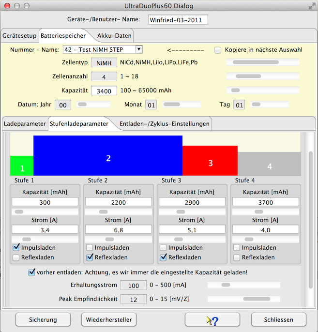
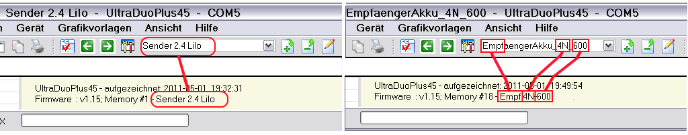
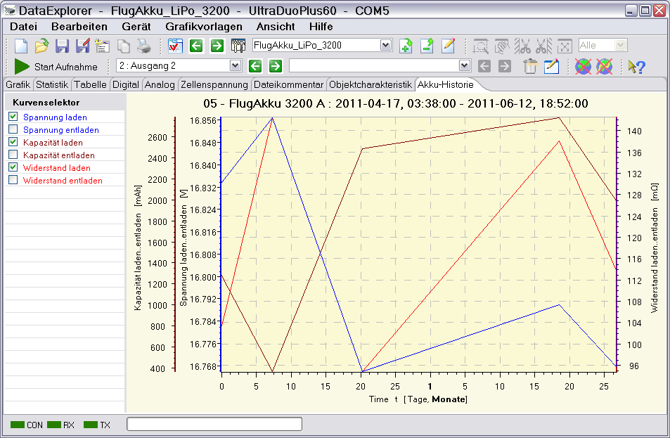
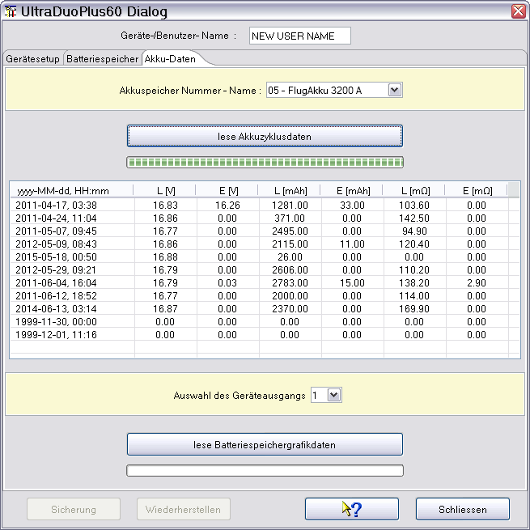

Der Ultra Duo Plus-Gerätedialog dient zum konfigurieren des Gerätes selbst, Identifikationsname, Tastenton u.s.w. Das Wichtigste ist aber die Konfiguration der Batteriespeicher mit dem Zellentyp, der Kapazität und den Lade-, Entlade- und Zyklusparametern. Ausgenommen ist hiervon das Ultra Duo Plus 80.
Nachdem die serielle Schnittstelle über den Geräteauswahldialog eingestellt ist und dieser Gerätedialog aufgerufen wurde, wird automatisch die Kommunikationsschnittstelle geöffnet und die wichtigsten Daten ausgelesen. Hierzu gehören die Basiskonfigurationswerte des Geräts selbst. Die Auswahl der Batteriespeicher erfolgt durch Auswahl mittels der Dropdownbox. Die Einstellung der Werte selbst erfolgt über die Schieber, oder bei weiß hinterlegten Feldern durch Tasteneingabe.
Hinweis: Wichtig ist einen Gerätenamen anzulegen, da dieser Name für die Identifikation eines Datencache benutzt wird. Dieser Datencache wird beim erstmaligen Öffnen des Dialoges initial gefüllt. Deshalb dauert das erstmalige Öffnen auch etwas länger. Das der Datencache gefüllt ist, kann man an der Aktivierung der Knöpfe erkennen, die für die Verwaltung von Sicherungskopien gedacht sind.
Die nachfolgenden Bilder zeigen Lade-, Entlade- und Zyklusparameter für einen NiMH Akkumulator.


Hier ein Bild das die Stufenladeparameter zeigt, die nur für NiMH-Akkumulatoren möglich sind.

Die nachfolgenden Bilder zeigen Lade-, Entlade- und Zyklus-Parameter für einen LiPo Akkumulator.


Hinweis: Es werden nur die Parameter zur Einstellung angeboten, die für den gewählten Batterietyp Relevanz haben.
Die Aufnahme von Datenkurven wird einfach durch Drücken der "Start Aufnahme"-Taste gestartet. Dies sollte bei vorbereitetem Ladegerät geschehen, also Ladeprozess gewählt oder konfiguriert, Akku angeschlossen. Erst nach dem Starten der Datenaufnahme vom DataExplorer am Gerät den Ladeprozess starten. Nur so ist gewährleistet, dass der komplette Ladevorgang aufgenommen wird. Die Umschaltung der Lade- bzw. Entladekurven erfolgt automatisch (sofern im DataExplorer so voreingestellt), da die vom Gerät gelieferten Daten diese Information enthalten. Die Anzeige springt automatisch auf den Datenkanal, der als letztes Daten liefert. Im Bild ist ein Ladevorgang eines zusammengeschlossenen LiPo-Akku mit acht Zellen zu sehen. Es werden nur die Kurven angezeigt, die auch Daten enthalten, dadurch entsteht der Sprung von "ZellenSpannung 4" nach "Zellenspannung 8", was den Balancerausgängen des Ladegerätes entspricht.

Ist das Gerät über einen gewissen Zeitraum inaktiv, stellt also keinen laufenden Prozess am Gerät fest, wird der serielle Port geschlossen.
Ladegräte, die Batteriespeicher verwalten können, bieten die Möglichkeit der automatischen Objektanwahl. Als Voraussetzung dazu muss einmal der Konfigurationsdialog benutzt worden sein. Hierbei wird eine Konfigurationsdatei als Datencache für das Gerät mit dem Gerätenamen zur Identifizierung angelegt. Startet man die Datenaufnahme, wird als erstes der Gerätename ausgelesen, danach dann die Datenaufnahme gestartet. Liefert das Gerät anschießend die ersten Daten, steht darin die Speichernummer. Mit der Speichernummer kann nun aus der Gerätecachedatei der Batteriespeichername ausgelesen werden. Der Batteriespeichername wird dazu verwendet, einen passenden Objektnamen zu finden. Wird eine gute Übereinstimmung gefunden, wird das Objekt angewählt und vorgeschlagen.
Wie wird der Objektname gefunden, wenn er nicht vollständig mit dem Batteriespeichernamen übereinstimmt? Der Batteriespeichername wird an Leerzeichen, Bindestrichen und Unterstrichen zerlegt. Die einzelnen Namensfragmente werden dann dazu verwendet, Übereinstimmungen zu finden. Der Objektname, der die meisten Übereinstimmungen aufweist, wird ausgewählt.

Hinweis: Möchte man diese Eigenschaft für sich ausnutzen, sollte man die Batteriespeichernamen und Objektnamen entsprechend benennen. Beide Namen können auch nachträglich umbenannt werden, falls erforderlich.
Über den Tabulator Akku-Daten können die Akkuzyklusdaten abgerufen werden. Diese Daten werden dann in einem neuen Tabulator in der Hauptansicht dargestellt.

Hinweis : Es werden nur Daten angezeigt, die innerhalb der letzten zwei Jahre für den ausgewählten Akku aufgenommen wurden.
Durch Misskonfiguration des Datums kann es vorkommen, dass es zu Fehleinträgen kommt. Wird eine solche Zeitstempelabweichung festgestellt, wird ein kleiner Dialog angezeigt, der hier Korrekturen ermöglicht.

Wie kann man die zur Änderung vorgeschlagenen Zeitstempel mit Lade-/Entlade-Vorgängen korrelieren? Beim Einlesen überspringt man erst einmal alle Änderungsvorschläge und schaut sich die Tabelle mit den gelesenen Einträgen an.

Nun kann man sich die Daten in aller Ruhe ansehen und mittels der gesicherten DataExplorer-Dateien von den in Frage kommenden Einträge, bei einem weiterem Abrufen der Historiendaten, die Korrekturen vornehmen.